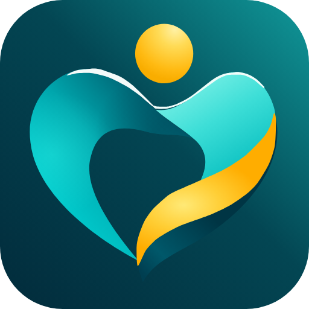

My care
EgyHealth 360
UI: 400 body · 500 labels · 600–700 headings.
Current brand outline: 800 / tagline 450.
A foundation for the selected turquoise-and-gold symbol. No new concept, no symbol changes.
Symbol direction accepted by owner.
Final Brand V2 remains pending.
Lockup thumbnails: open an SVG for full-size lettering. Arabic fit and tagline remain pending. English reference tagline: “Integrated care around you”.
#0B3D4APrimary dark / strong ink#0FB5A8Identity accent#E3B45CRestrained emphasis#F7F9FAQuiet surfaceFlat board labels are distinct from the logo’s approximate gradient stops. Muted ink #45616A, soft surface #EDF4F5 and border #D6E3E7 are proposed support neutrals. Turquoise / gold on white fail normal-text contrast; use strong ink. No clinical status semantics implied.
My care
EgyHealth 360
UI: 400 body · 500 labels · 600–700 headings.
Current brand outline: 800 / tagline 450.
متابعتي
إيجي هيلث 360
400 body · 600 headings / current brand outline.
Allow generous room for Arabic dots and marks.
Live type specimens, not replacement wordmarks or new taglines. Starting hierarchy: headings 24–32px · body 16px · UI 14–16px. Exact source fonts, weights and spacing remain approximated; Arabic wordmark fit is DP01.

Favicons shown at actual CSS size, 1× capture.
At 16px, fine rim / fold detail diminishes.
Prefer ≥32px standalone symbol. Full tagline lockup starts at 600px width; validate reading size. Proposed clear space: 0.5× head diameter around symbol, 1× around full lockup.
Shared identity across all five workspaces. Arabic RTL and English LTR follow accepted product navigation; the care symbol never mirrors. Mobile uses the standalone mark and legible naming, without squeezing in taglines.
Existing specimens are fixed board artwork, not localized functional navigation or production approval.